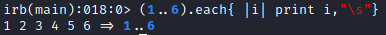
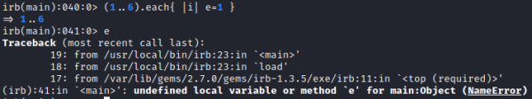
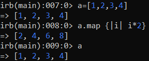
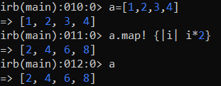
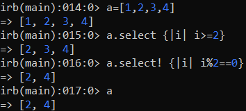
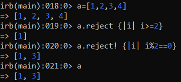
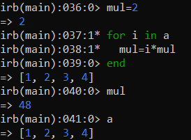
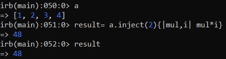

Iterators
An Iterator is a method that allows you to loop through the members of a collection.
•
each   Note:
each block defines a new variable scope (one for each |i|). In the example above “e” is defined in the each block, therefore is no longer available after that the iteration ends.
•
Iterators of Enumerable Objects Enumerable objects are
Arrays,
Hashes and
Ranges We can use statements collect/map, select, reject, inject to iterate these objects
Append the
exclamation mark ! at the end of the statement to modify the original object
◇
collect/map (collect and map statements are synonymous)
 if we add the exclamation mark, it will affect the original collection too.
 ◇
select returns an array of the original collection elements for which the associated block returns a positive value (no false, nor nil).
 ◇
reject It is the opposite of select. It returns an array of original collection elements for which the associated block returns a false or nil.
 ◇
inject Usually is used to iterate through array elements, instead of FOR
▪ FOR
 ▪
inject the initial value of the accumulator must be specified between brackets (in this case mul=2)
